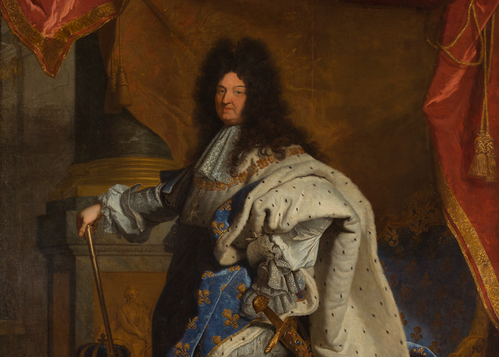

Histoire
Le couple Versailles/Louis XIV semble indissociable tant Versailles est identifié à Louis XIV et réciproquement. Si le premier existait bien avant le second, très jeune, Louis XIV a connu une véritable passion pour Versailles et a décidé de l’étendre bien au-delà des limites que son père avait fixées. Le souverain a eu une véritable vision pour le site, se faisant architecte et bâtissant le chef-d’œuvre de sa vie qui lui restera éternellement associé.
